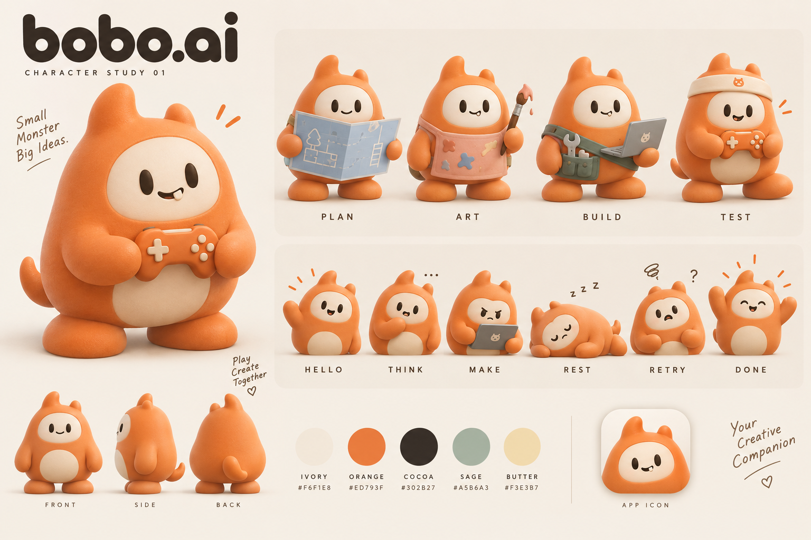
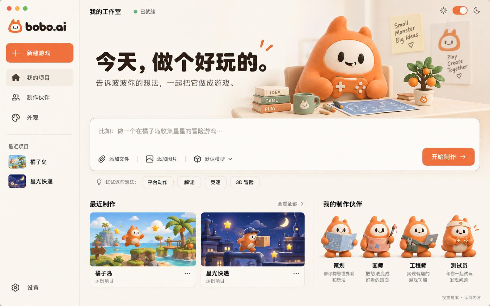
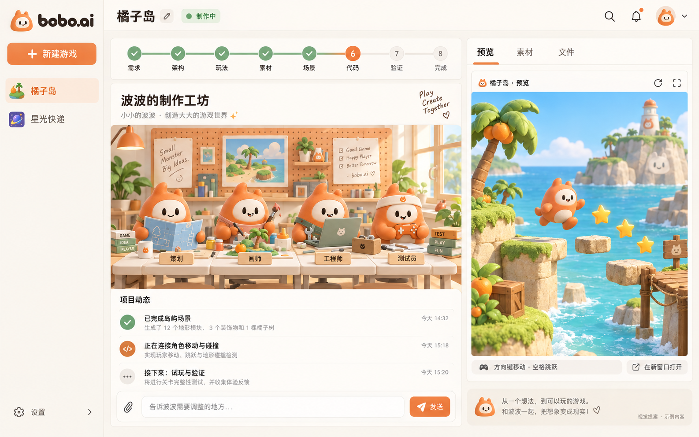

波波与它的创作工坊
同一个角色，四种工作装束。让品牌更统一，也让每个岗位更容易识别。下面三张是生成的视觉概念稿，界面中的项目与运行状态为示意内容。
奶油白橘子橙可可棕鼠尾草绿

波波角色设定 · 主形象 / 四个岗位 / 六种状态
bobo.ai 首页 · 一句话开始制作
bobo.ai 制作工作台 · 伙伴工坊与游戏预览角色设定中的小牙、装束和轮廓需要在后续逐帧制作时统一。当前图片用于讨论风格，不是可直接替换的透明精灵图或可运行界面。
换肤会落在哪些地方
这一轮先把视觉做成可审阅的完整提案；应用运行代码、远端仓库名称与上游同步设置尚未改动。
| 部分 | bobo.ai 提议 | 状态 |
|---|
| 名称、图标 | bobo.ai 全小写；波波头像作为图标 | 名称确定，图标为概念 |
| 主角色与岗位 | 圆润小怪兽；策划、画师、工程师、测试员 | 设定稿待反馈 |
| 首页 | 创意输入优先；右侧波波桌面小景 | 效果图待反馈 |
| 制作工作台 | 左侧项目、中部工坊与记录、右侧游戏预览 | 效果图待反馈 |
| 其他皮肤与动作 | 设置、选择器、弹窗、过渡、钓鱼和逐帧动作延续同一视觉 | 确认视觉后制作 |
实现时优先改展示层，内部存储和通信字段保持兼容，便于继续合并上游更新。生成过程使用内置 imagegen；完整提示词随图片放在 generated 文件夹。